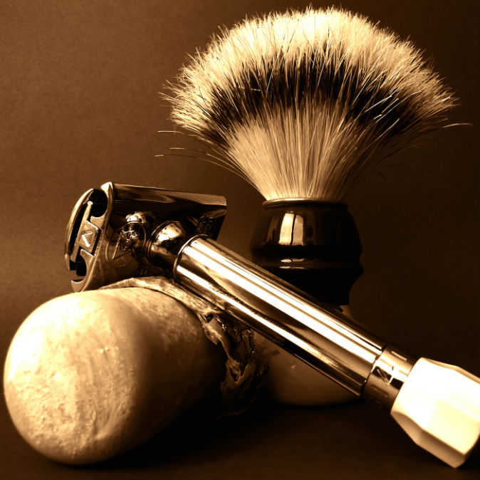

Sobre a barbearia taverna:

Localizada no coração da cidadeA Barbearia Taverna traz para o mercado o que há de melhor para o seu cabelo e barba. Fundada em 2026, a Barbearia taverna já é destaque na cidade e conquista novos clientes a cada dia.
Nossa missão é:"Proporcionar auto-estima e qualidade de vida aos clientes".
Oferecemos profissionais experientes e antenados às mudanças no mundo da moda. O atendimento possui padrão de excelência e agilidade, garantindo qualidade e satisfação dos nossos clientes.
Nosso estabelecimento
Nosso estabelecimento fica ao lado da funelaria do Marlon.
Benefícios
- Atendimento aos Clientes
- Espaço diferenciado
- Localização
- Profissionais Qualificados
- Pontualidade
- Limpeza

>